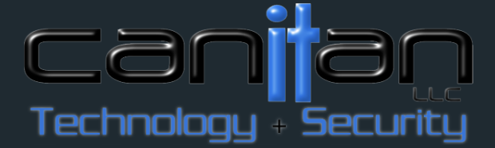

Proving Rev.io can map Canitan’s real workflows before the August promotion window closes.
Canitan is comparing Rev.io against Field Motion 2.0 after an earlier Rev.io early-access evaluation stalled. The next step is not a generic demo — it is proof that Rev.io can handle their service workflows, projects, mobile field work, inventory, assets, QuickBooks, and reporting.
A technology and security provider that needs field execution, service workflows, and billing to work as one system.
Business profile
Canitan provides IT, networking, phones, security, access control, cameras, server support, WiFi, backup, and related technology services for small businesses and property environments.
Operating model
Their work spans service tickets, project jobs, technician field activity, inventory, assets serviced, customer equipment history, and billable versus covered work.
Decision context
They previously signed up with Rev.io during early access but did not complete migration. The renewed evaluation needs to prove Rev.io now fits the exact workflows that matter.
Source basis: Canitan website positioning plus the Canitan Value Planner in Notion.
Canitan has a cost-driven alternative — but the real decision is workflow confidence versus long-term platform value.
Field Motion is cheaper
Field Motion 2.0 appears less expensive, but it would require a 3-year commitment. That makes near-term savings risky if the platform cannot support Canitan’s long-term process needs.
Rev.io has to re-earn trust
The prior Rev.io evaluation stalled around project management gaps and QuickBooks sync concerns. Those objections need direct, current proof — not assurances.
Workflow fit is the gate
Nathan and Diego need to see their actual forms, checklists, escalation paths, notifications, ticket updates, and technician mobile flows mapped into Rev.io.
Promotion timing creates urgency
If workflow fit and pricing are confirmed, the August promotion and no setup fee could make the switch financially viable before the window closes.
Canitan is not asking whether Rev.io has features. They are asking whether Rev.io can run their real jobs.
Custom workflows are not fully solved today
The current platform does not fully support the way Canitan wants to manage custom forms, multi-step job workflows, technician processes, and escalation paths.
Project billing visibility is critical
They need better visibility into project billing, ticket-level work, billable versus covered work, assets serviced, and charges that should roll into projects.
Field execution must be mobile-first
Technicians need offline support, geofencing, timers, signatures, photos/videos, notes, asset lookup, parts, timesheets, dispatch maps, and Revii support.
Inventory and assets need structure
Canitan needs multi-location inventory, truck stock, reservations, serialized tracking, scanning, loaner/deployable inventory, asset history, parent-child relationships, and custom fields by asset type.
The value case is a more complete operating platform — not simply a cheaper PSA.
Reduce manual work
Mapped workflows, checklists, escalation, macros, Teams notifications, ticket updates, and mobile technician steps can reduce manual coordination and missed handoffs.
Improve billing accuracy
Progressive invoicing, deposits, item-type billing, final invoices, and ticket charges rolled into project billing help connect field work to revenue capture.
Strengthen leadership visibility
Custom dashboards, role-based reports, scheduled reporting, SQL/BI access, and Revii-generated reports can give Nathan and Diego better visibility into field performance and job economics.
Avoid the wrong 3-year bet
If Rev.io proves higher-value fit, Canitan can avoid locking into a cheaper but less robust platform that may recreate process limitations later.
Impact estimates are directional assumptions from the Value Planner. Exact ROI should be firmed up with workflow counts, project volume, technician count, current tool costs, billing exception frequency, and average manual time per job step.
What Rev.io must prove before Canitan can choose value over the cheaper alternative.
Workflow / project proof
- Multi-step workflows, phases, tasks, checklists, escalations, macros, and Teams notifications
- Project phases, tickets by phase, milestones, Gantt view, job costing, and centralized project billing
- Forms/checklists mapped from Canitan’s top three examples
Field and operations proof
- Mobile offline support, geofencing, timers, signatures, media, notes, timesheets, and dispatch map
- Inventory across locations, trucks, reservations, serialized items, scanning, reorder, loaners, and deployables
- Asset history, parent-child relationships, asset custom fields, and assets tied to tickets
Business systems proof
- QuickBooks integration stability
- CRM, quoting, proposals, e-signature, and quote-to-ticket/project flow
- Analytics, custom dashboards, alerts, scheduled reporting, role-based reporting, SQL/BI, and Revii reporting
Known caveat
Asset camera scanning is not fully supported today. Rev.io should show current asset lookup/live search, clarify product and serial scanning, and document asset camera scanning as product feedback.
Pricing conversation
Ryan Koontz may need to join the next call if pricing approval is required. The August promotion and no setup fee are central to making the switch financially viable.
Use Canitan’s own workflows to turn product interest into decision confidence.
1. Canitan sends workflow examples
Nathan and Diego send their top three workflows or custom form examples so the Rev.io team can map the process instead of demoing generic capability.
2. Andy and Tony map in Rev.io
Andy and Tony translate those workflows into Rev.io phases, forms/checklists, ticket updates, notifications, escalations, mobile technician steps, billing touchpoints, and reporting outputs.
3. Follow-up demo
Next call is scheduled for Monday at 1:00 PM Central / 2:00 PM Eastern to demo the exact workflow mapping and answer product-fit questions.
4. Resolve pricing and promotion
If workflow fit is proven, bring Ryan into pricing if needed and confirm whether the August promotion and no setup fee make the move viable before expiration.
Key next step: prove Rev.io can support Canitan’s actual service process, then resolve pricing so Nathan and Diego can make a decision.